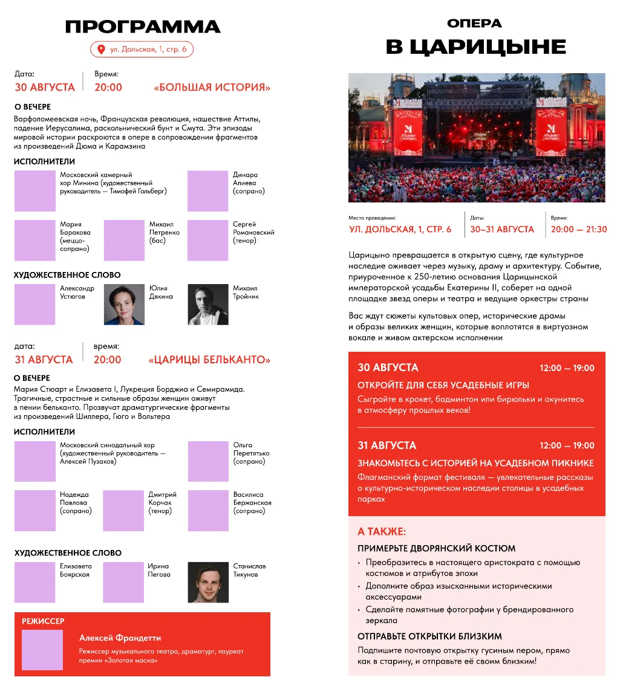

Проектный офис, 02.2025–03.2026
Сайт фестиваля «Усадьбы Москвы»: глубина просмотра +10,4% к прошлому году
Отвечал за креативы, тексты, флоу и CJM страниц фестиваля, от главной до лендингов отдельных событий. Сезон 2025 года посетили больше 900 000 человек, а его рекламная кампания собрала более 900млн охвата за год.
+10,4%глубина просмотра к прошлому году
2,60 → 2,87страницы за визит
8ключевых страниц с новой структурой
1 000+точек на картах
Результат
Пересобрал структуру 8 ключевых страниц сайта фестиваля и добавил новые контентные блоки. Глубина просмотра выросла на 10,4% к прошлому году, с 2,60 до 2,87 страницы за визит с сохранением конверсии.
Как измеряли
- Яндекс Метрика
Что сделал я
- UX, структура, Креативы, тексты, флоу и CJM главной, страниц кластеров и лендингов событий (Новая классика в Кусково, Опера в Царицыно, Маскарад в Петровском Путевом Дворце, Городские квесты, Зима усадебная совместно с Яндекс Go).
Прокрутите внутри
Экраны





Хотите обсудить роль?
Написать в Telegram